A living room trend list is only genuinely useful if it is honest about what is actually worth adopting versus what is just filling out a listicle.
Some of what is below has real, lasting staying power.
Some of it is already covered in more depth elsewhere on the site, in which case this points there instead of repeating it all again.


Personal Touches That Make It Yours
Whatever else is trending, a room with genuine personal objects, travel finds, family pieces, real collected items, reads as more considered than one following every trend on this list perfectly.
This is the one category that never actually goes out of style, regardless of what else changes year to year.
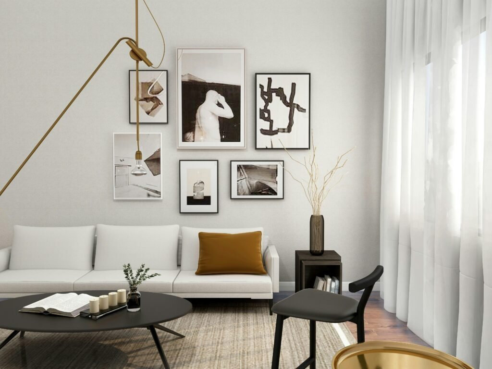
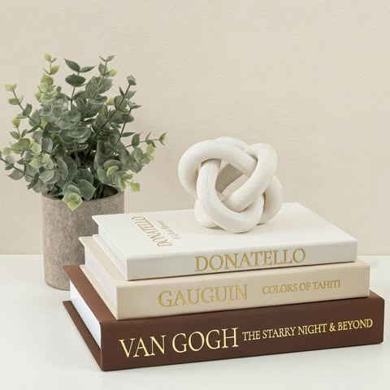
Vintage Faux Book Box Set of 3, Brown Linen Decorative Books, Rustic Farmhouse Decor
Shop on AmazonRugs That Define the Space
A properly sized rug, large enough for at least the front legs of every major piece of furniture to sit on it, remains one of the most commonly gotten-wrong details in living room design.
Getting this one detail right does more for a room's polish than most people expect from a single textile choice.

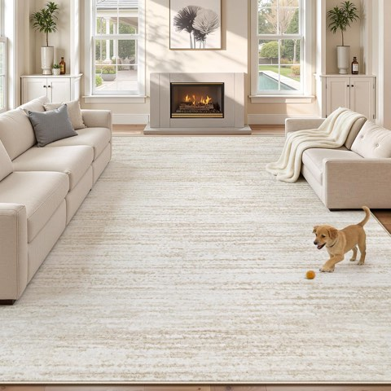
Washable 8 x 10 Area Rug for Living Room, Modern, Non-Slip, Stain Resistant
Shop on AmazonStatement Pieces That Anchor
One confident, well-chosen piece, a bold chair, an oversized art piece, continues to outperform several smaller attention-grabbing items competing with each other.
This works especially well in a room that is otherwise kept fairly restrained.


Layouts That Feel Effortless
A layout built around genuine conversation and real traffic flow, rather than just facing every seat toward the TV, keeps coming back because it solves an actual daily problem.
This is a deep enough topic to deserve its own full breakdown rather than a brief mention here.
Sustainable Touches That Matter
Reclaimed materials and responsibly sourced furniture reflect a values shift that is likely to keep growing rather than fade as a trend.
This category already has its own dedicated, more detailed coverage on the site worth checking for anyone prioritizing it specifically.
Technology That Disappears
TVs that blend into art, hidden speaker systems, and cord management are all part of a broader shift toward tech that does not visually dominate the room.
Worth adopting gradually as existing tech needs replacing, rather than as a single expensive overhaul.
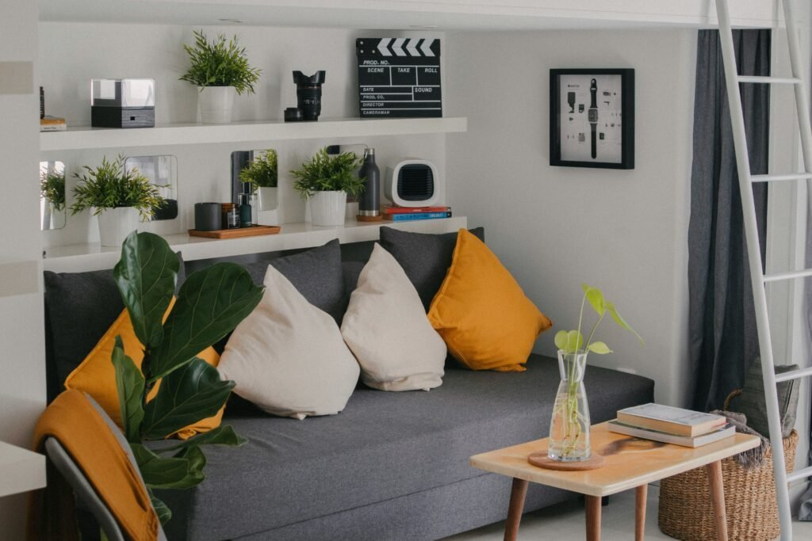
Accessories That Tie It Together
A few well-chosen accessories, rather than many small decorative objects, continue to outperform a cluttered approach.
This principle has stayed consistent across several years of shifting trends, which says something about its staying power.
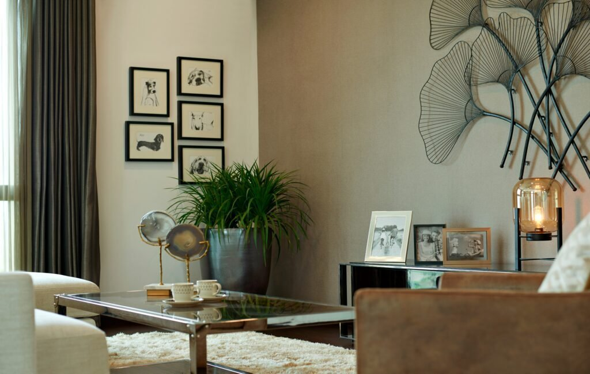
Wall Treatments With Personality
Textured paint, paneling, and bolder wallpaper choices are extending beyond bedrooms into living rooms more than in past years.
This is a bigger commitment than most other categories on this list, worth it only for someone confident in the specific choice.

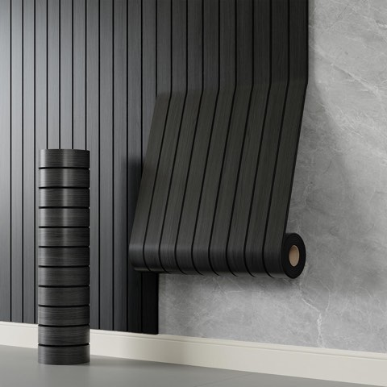
Peel and Stick PVC Slat Wall Panel, 236 x 15.7 Inch, Faux Black Wood Grain
Shop on Amazon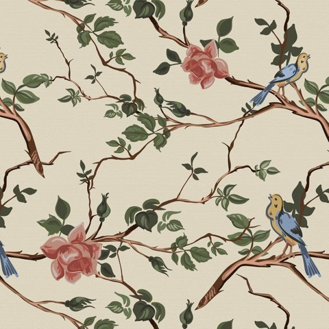
Vintage Peel and Stick Wallpaper, 17.7 x 118 Inch, French Bird and Rose Branch
Shop on AmazonLighting That Actually Shines
Layered lighting, ambient, task, and accent sources working together, remains one of the highest-impact, least style-dependent upgrades a living room can get.
This holds up regardless of which other trends come and go, since it is fundamentally about function first.
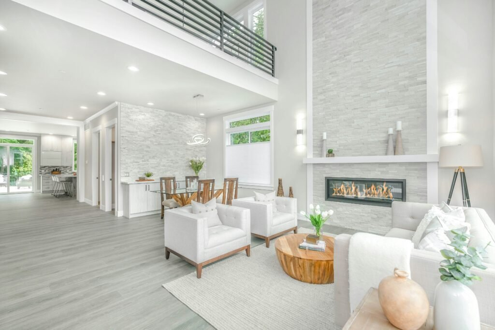
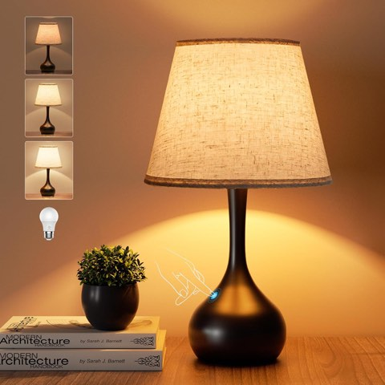
ONEWISH Touch Bedside Lamp, Farmhouse 3-Way Dimmable Table Lamp with Fabric Shade
Shop on AmazonTextures Adding Depth
Bouclé, chunky knits, and natural woven materials keep showing up because they solve a real problem, a room that is visually flat without them.
This is one of the safest trends on this entire list, since texture does not go out of style the way a specific color or shape eventually does.

Furniture That Earns Its Space
Multi-functional furniture, a storage ottoman, a sofa bed that does not look like one, is less a passing trend than a genuine response to how living rooms actually get used now.
Worth prioritizing pieces that do real double duty over ones chosen for looks alone.
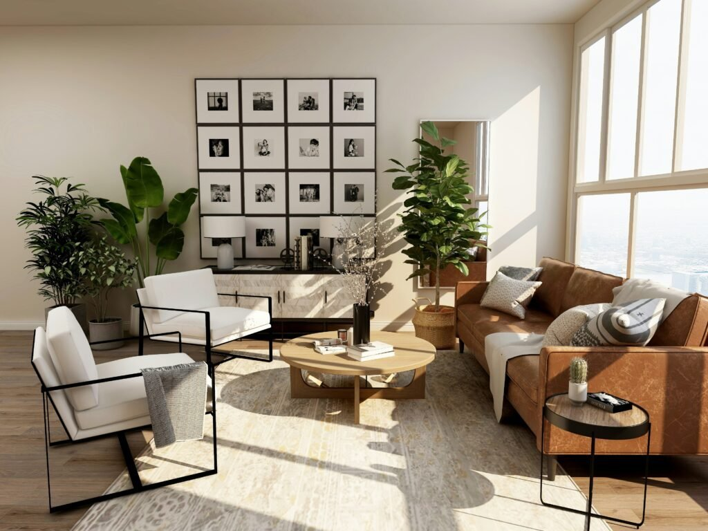

Colors Setting the Mood
Muted, warm tones continue to outperform anything too bright or saturated for a room meant to feel relaxing rather than energizing.
This category has enough nuance to deserve its own deep dive, worth exploring separately if color is the main thing being planned around right now.

MAXYOYO Modern Accent Chair with Metal Frame, Comfy Living Room Chair
Shop on Amazon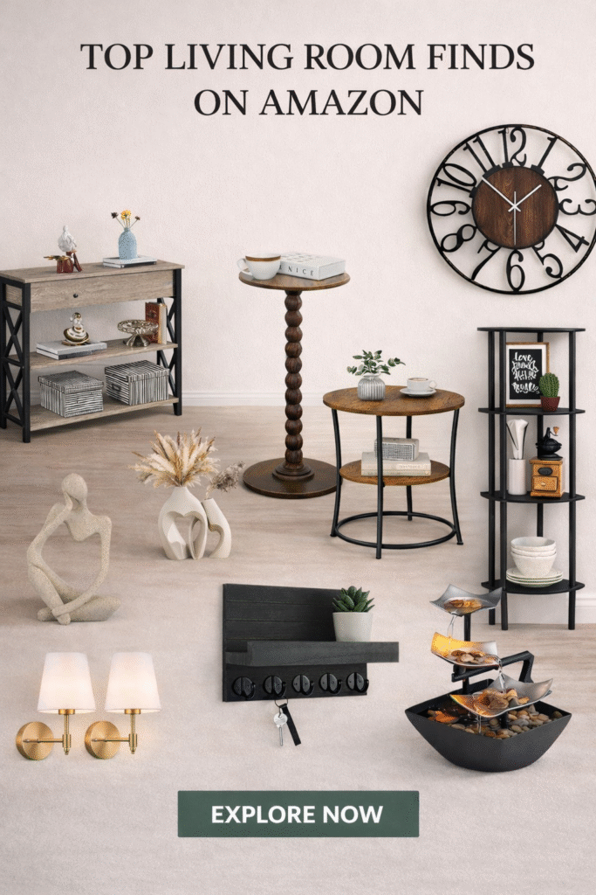
Washable 8 x 10 Area Rug for Living Room, Modern, Non-Slip, Stain Resistant
Shop on AmazonSoalmost 9 x 12 Washable Area Rug for Living Room, Non-Slip, Beige
Shop on Amazon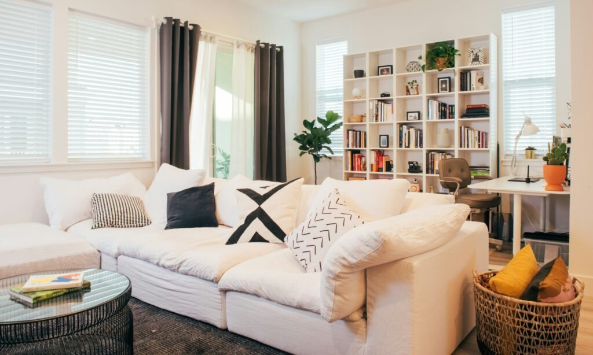

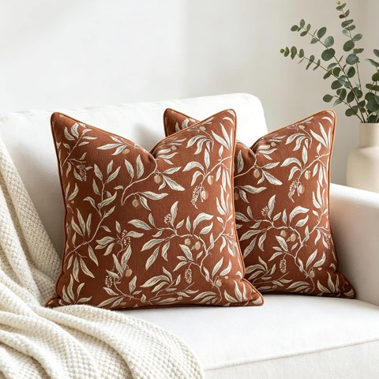
Terracotta Chenille Jacquard Botanical Throw Pillow Covers, 18 x 18 Inch, 2 Pcs
Shop on AmazonStaying Ahead of the Curve
Texture, layered lighting, a properly sized rug, and genuine personal touches are the safest long-term bets on this entire list.
Bolder wall treatments and specific statement pieces are the bigger style swings, worth it only for someone genuinely committed to the look.
A living room built thoughtfully around the safer categories here keeps aging well regardless of whatever ends up trending next year.